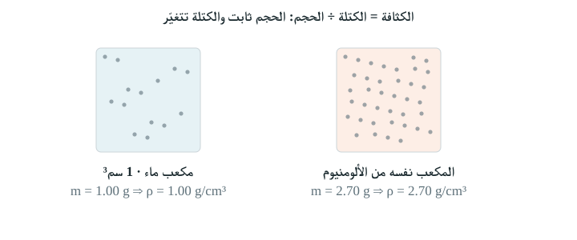

الكثافة
Density
كتلة وحدة الحجم من المادة، وتُحسب بقسمة الكتلة على الحجم، وتُعبَّر عنها عادةً بغرام لكل سنتيمتر مكعّب.
الكثافة هي كتلة وحدة الحجم من مادة ما. تُعطى بالعلاقة d = M/V، أي الكتلة مقسومة على الحجم، وتُقاس عادةً بغرام لكل سنتيمتر مكعّب، أو بكيلوغرام لكل متر مكعّب في وحدات النظام الدولي. لها فائدة عملية مباشرة: إذا عُرفت كثافة جسم أمكن الحصول على كتلته من حجمه، أو حجمه من كتلته، لأن الكتلة تساوي الحجم مضروبًا في الكثافة. ولأن الكثافة خاصية مميِّزة للمادة عند ظروف معيّنة، فهي أداة تعريف ومقارنة قبل أن تكون عملية حسابية؛ ولها في المقابل معنى مختلف في عبارة «كثافة الجسيمات» حيث تعني عدد الجسيمات في وحدة الحجم لا كثافة الجسيم الواحد.
الآلية
كيف يحدث الأمر على مستوى الجسيمات أو المتغيّرات المباشرة
الكثافة ناتجة عن حاصلين: كتلة كل جزيء وعدد الجزيئات في وحدة الحجم. في الغاز تتباعد الجزيئات حتى يشغل الحيّز الفراغ لا المادة، فتصغر الكثافة بمرتبتين أو ثلاث عن السائل. وفي الأجسام الصلبة يثبّت الترتيب البلوري المسافات، فلا تتمدد الكثافة إلا قليلًا بالحرارة. تغيير الطور يغيّر الكثافة تغييرًا حاسمًا: الماء يبلغ 1.00 g/cm³ سائلًا و0.917 g/cm³ جليدًا، لأن شبكة الجليد السداسية تحتجز فراغات أكبر، ولذلك يطفو الجليد ويبدأ التجمّد من السطح.
الأرقام والوحدات
العلاقات والوحدات والنطاقات العددية التي تسند الشرح
ρ = m/V بوحدة كيلوغرام/متر مكعب في النظام الدولي، و1 g/cm³ = 1000 kg/m³. الماء 998 kg/m³ عند 20 °C، والهواء 1.204 kg/m³ عند 20 °C وضغط جوي، والحديد 7874 kg/m³، والأوزميوم 22600 kg/m³ (أكثف عنصر طبيعي). والكثافة النسبية للمائع تُقاس مقابل الماء عند 4 °C. في الغاز المثالي ρ = pM/(RT): عند ضغط ثابت تقلّ الكثافة بزيادة الحرارة بنسبة 1/T، فترتفع الكثافة 1.9% فقط بين 288 و293 كلفن.
الفرق الدقيق
المفهوم الملتبس الذي يُخلَط به، وأين ينفصلان
الكثافة ليست الوزن ولا الثقل النوعي: الوزن قوة تعتمد على g، والكثافة خاصية مادة مستقلة عنه، والثقل النوعي نسبة بلا وحدة. ولا تُخلط بالكثافة الظاهرية (bulk density) التي تقيس حبيبات مسحوق مع الفراغات بينها: كثافة الحبوب في الحبة الواحدة أعلى من الظاهرية. وتبقى الكثافة خاصية مكثّفة لا تتغيّر بتقطيع الجسم، لكنها شاملة للغاز عند تغيّر الحجم.
حدود التعريف
أين ينكسر التعريف أو النموذج وما الذي لا يفسّره
الكثافة ليست ثابتًا للمادة: تتغيّر بالحرارة والضغط وبالموقع في مجال جذب قوي. في السوائل غير القابلة للامتزاج تتدرّج الكثافة عموديًّا فيحدث الطبقية. وفي السوائل غير النيوتونية والمواد المسامية لا يكفي رقم واحد بل تلزم دالة توزيع. وعند مقاييس الجزيء الواحد يفقد التعريف معناه الكلاسيكي، ويُستبدل بكثافة عدديّة أو دالة ترابط.

| الكمية | القيمة | المصدر |
|---|---|---|
| كثافة الماء | 1 غرام/سنتيمتر مكعّب | [1] |
| كثافة الأرض (متوسط) | 5.51 غرام/سنتيمتر مكعّب | [1] |
| كثافة الهواء | 1.2 كيلوغرام/متر مكعّب | [1] |
المصادر
- 1 Density — Encyclopaedia Britannica. www.britannica.com/science/density · اطُّلع عليه 2026-11-13
استشهد بهذا المصطلح
الصيغتان مبنيتان من بيانات الصفحة نفسها: العنوان والتاريخ ورابط النسخة المنشورة.
الكثافة — Density. (2026). ديوان المعرفة — انفراد. https://infiradev.com/diwan/terms/density.html
@misc{density2026,
title = {الكثافة},
titleaddon = {Density},
howpublished = {{ديوان المعرفة — انفراد} — مرجع علمي عربي},
year = {2026},
url = {https://infiradev.com/diwan/terms/density.html},
urldate = {2026-11-13},
note = {مراجعة علمية: عبدالله الهويدي — مراجعة في تطبيق انفراد}
}
راجعه: عبدالله الهويدي — مراجعة في تطبيق انفراد · 2026-11-13 · آخر تحديث 2026-11-13